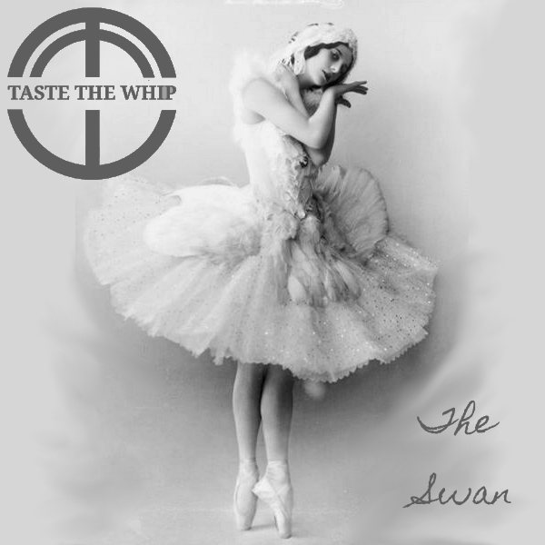

Track 01 · The Swan
Rail Replacement Bus Service
Listen
Lyrics
The ghosts of weary travellers make their way across the floorShuffling slowly onward, through the ever open doorA toll of the bell, a distant yell, we're blinded by the lightand the 'Rail replacement bus service' takes off in the night
Half a league onward, we rode through the traffic conesInto the valley of no signal for mobile phonesThrough the darkness rode the chosen fewTemporary bus stop. platform number 2
There's still room for a few up topand plenty more insideJust shuffle up along a bitWe're all going for a ride
Dead, vacant faces peer out through the glareThe 12 standing passengers just stand and stareA lightning bolt flashes and the rain's pouring downand the 'Rail replacement bus service' thunders out of town
Half a league onward, we rode through the traffic conesInto the valley of no signal for mobile phonesThe ticket inspector's nowhere to be seenHe's stuck in the toilet on Platform 13
There's still room for a few up topand plenty more insideJust shuffle up along a bitWe're all going for a ride
Under a low bridge and over a canalThe driver assures them he knows the localeThe bell-push sends S.O.S. and MAYDAY in Morse codeStill the 'Rail replacement bus service' tears along the road
Half a league onward, we rode through the traffic conesInto the valley of no signal for mobile phonesPringles and Red Bull are passed out on the wayStolen from the buffet car on Platform 13A
There's still room for a few up topand plenty more insideJust shuffle up along a bitWe're all going for a ride
© Derek Reid